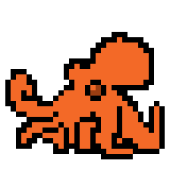

OCTOPUS FACTS
The excellent and sexy octopus is a creature of majestic wonder and passionate life at its
finest. From the shallows of the rocky tidepools to the inner depths of caves the octopi of the
world swim, swoop and swallow with their eight sucker-covered appendages. These appendages are
actually arms and can regrow if chomped off by a hungry shark. They are also very versatile and
squishy. Their bodies are also squishy, squishy.